Proposal for Final: Planning, Diagram and Userflow
Links to
Inspiration /
Design /
P and Comp /
Final Look
Diagram
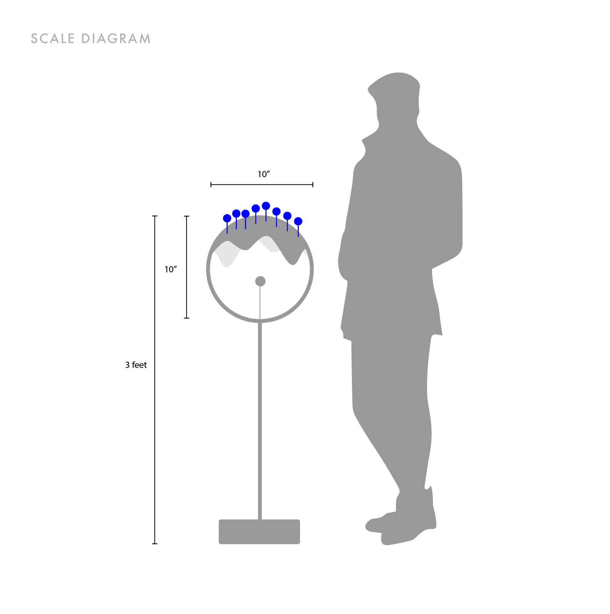 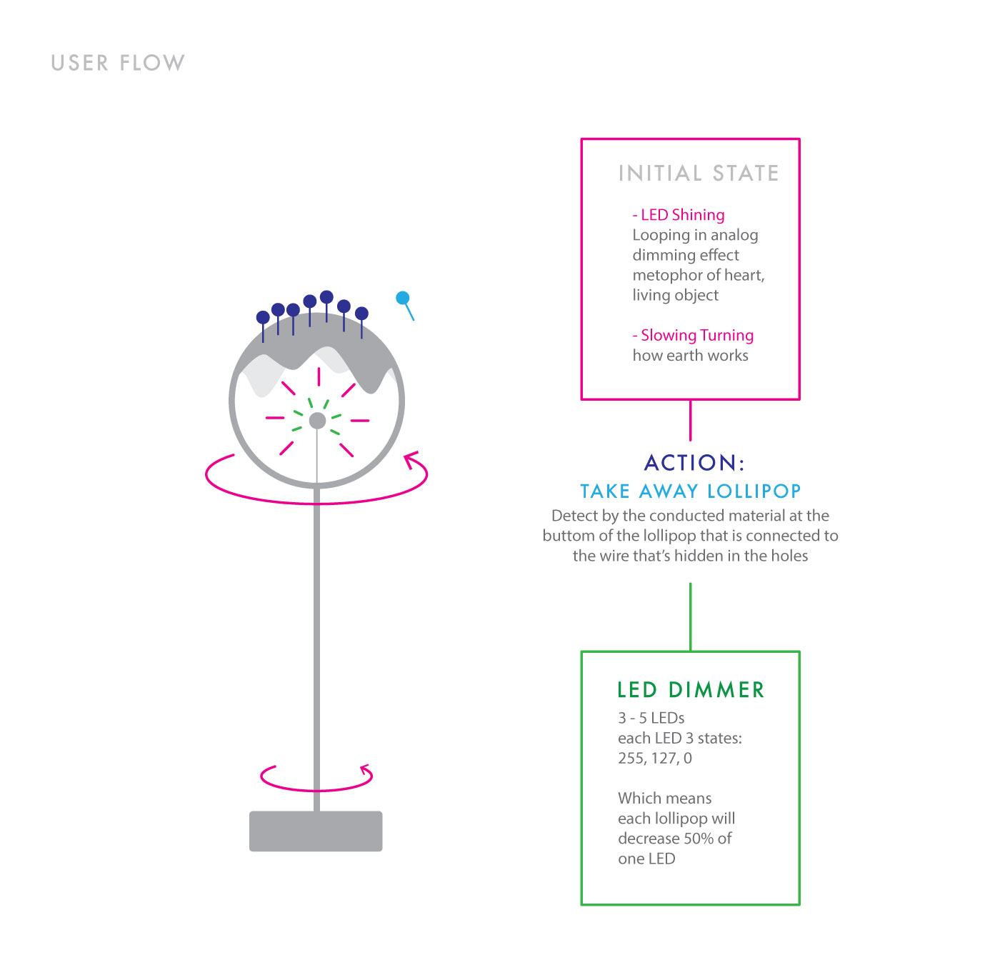3D Modelling
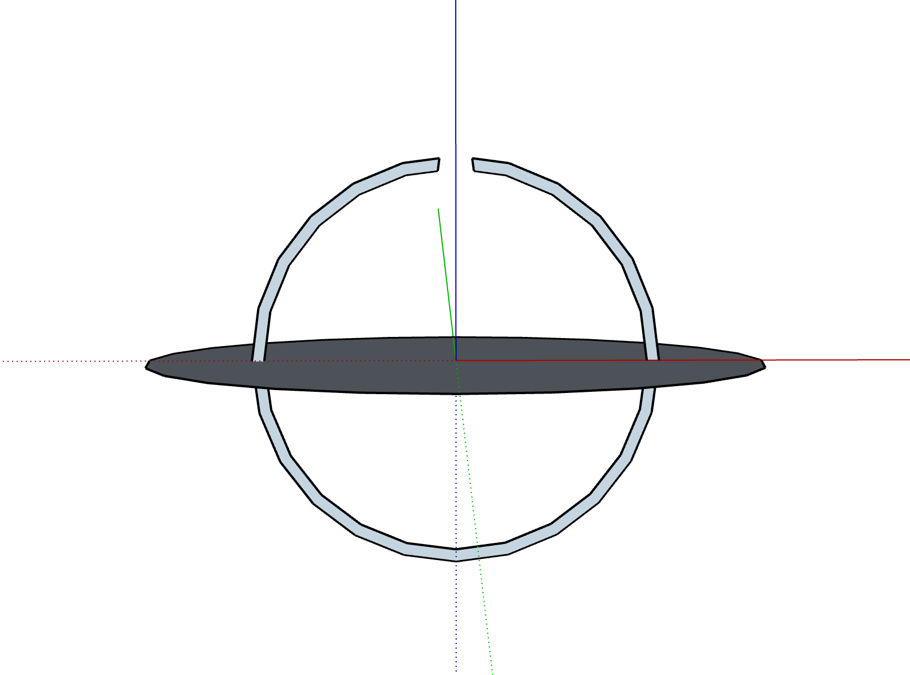 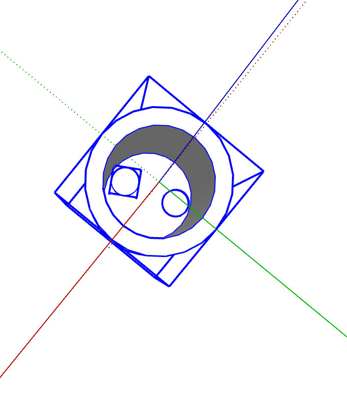
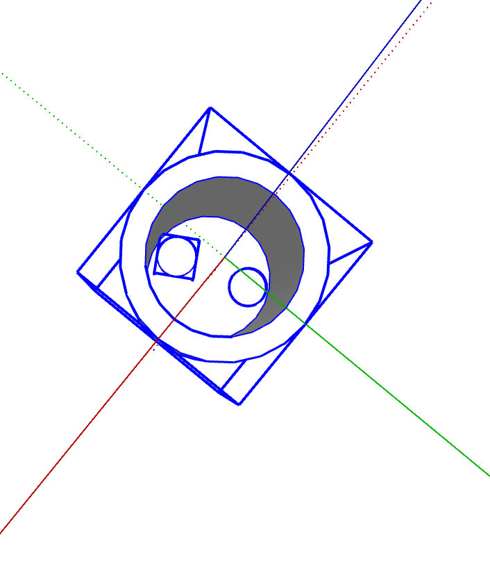
Midterm - "Pumpkin, UR BFF": Documentation and Code
Links to
Inspiration /
Design /
P and Comp /
Final Look
Inspiration
I remembered when I was young I often go trick or treating with my younger brother and my friends during halloweens. There was an unofficial rule for that day, which was the houses that will be offering treats will tied a ribbon to the door handle, so that other families who does want to get involved can avoid from this event. When I first moved there, I didn't know the 'rule' on that day, and remembering the 12-year-old Michelle Sun and 'her crew' being yelled by a young married couple after ringing the bell with a harmonized "Trick or Treat!"... We were so upset that we were planing for a water balloon trick, though we ended up forgetting the water ballwoon plan after the hyperness of received candies from other families, I still think a harmless but naughty trick is always what a kid wants during halloween.So what if, a water spraying candie bucket?
Design
For this project, I want to connected to P5JS to play around with the serial communication between web and arduino. There are several parts that I think should be added for the interactive experience--Physical Parts:
1. Spraying water (the main output)
2. Sensor for the candie - light sensor (input)
3. LED for the sensor (the input data will be low since it will be dark in the bucket)
4. Alerting LEDs (output - blinking) 5. A box to hide the sensing part (to hide 2 and 3)
P5JS Parts:
1. A 'Start' action (input)
2. Timer (input/output?)
3. Showing successful sensing from light sensor (output)

P and Comp
At first, I wanted to 3D print a bucket that has customized following parts:1. two holes at the bottom for LED and Sensor.
2. a mouth with a hole and mount for water pump.
3. a rather thin layer for the eyes and two holders for blinking LEDs.
4. a thick layer at the bottom to hide and organize the wires.
However, as I asked for help on 3D printing, I noticed it will take almost a day to print a bucket and which might not even be working, also with a limited time on this project. So I decided to just save my time for the interactive part instead of the design for the bucket.
I made a wooden base at the bottom to hide all the wires, and drilled several holes inside that looks like this:
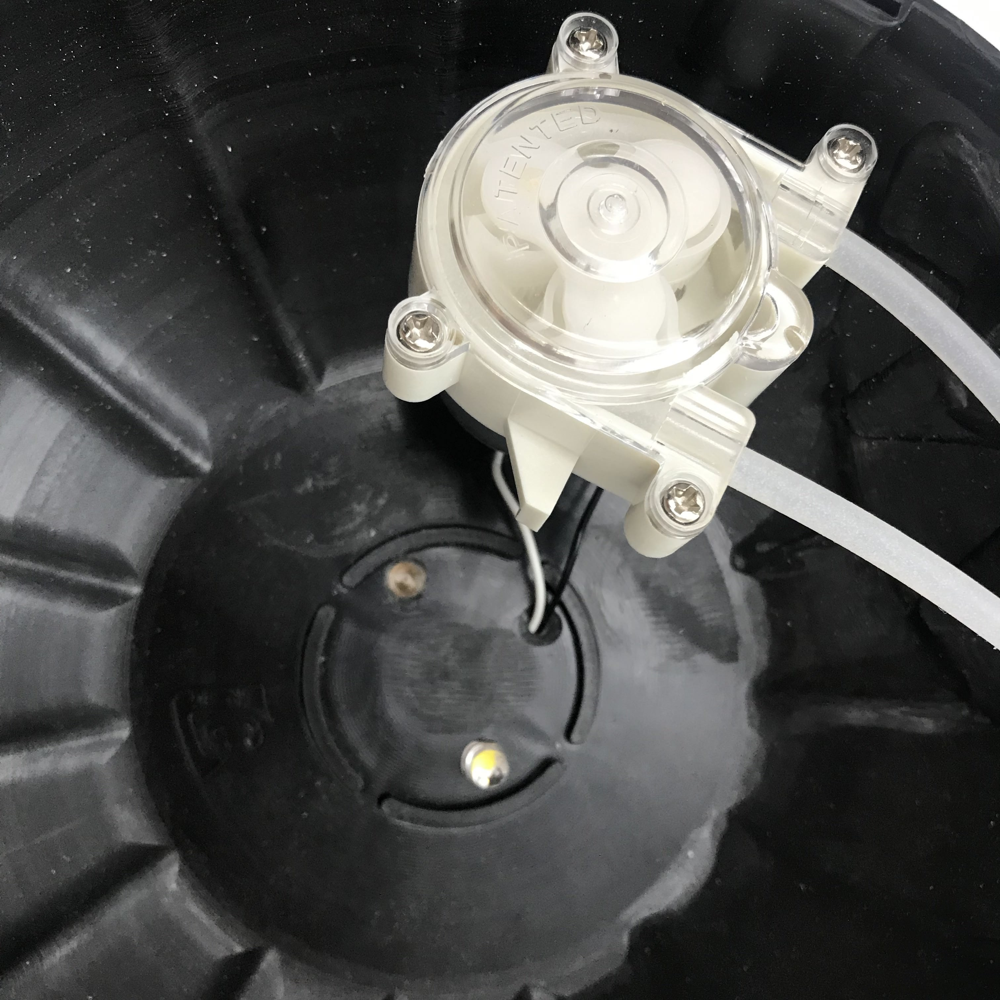

Before I mount everything, I need to make sure my 'comp' part works. I spent most of my time figuring out which data will be sent from p5 to Arduino and from Aruino to p5, and to make it clear I did this:

My story with water pump was sort of a nightmare... Not only because of I spent sometime setting up DC Motor driver and give up then go to the TIP120 transistor, but also playing with water wasn't a good choice...
However, here's my documentation of the treat:
And trick (the response takes 14s... but it is working):
Final Look
Last but not least, the code in my p5 page and arduino code could be find below or in the p5 page as well. And I will end here with some documentary photography. Thank you!
Arduino Code
#define lightSensor A0 #define sensorLED 2 #define waterPump 6 void setup() { Serial.begin(9600); pinMode(sensorLED, OUTPUT); pinMode(lightSensor, OUTPUT); pinMode(waterPump, OUTPUT); } void loop() { // analogWrite(waterPump, 0); if(Serial.available() > 0 ){ int byteFromSerial = Serial.read(); analogWrite(sensorLED, 255); if (byteFromSerial == 1){ analogWrite(waterPump, 255); delay(500); analogWrite(waterPump, 0); delay(5000000); } else if (byteFromSerial == 2){ analogWrite(waterPump, 0); } } int lightLevel = analogRead(lightSensor); Serial.println(lightLevel); delay(50); }
Week 5 - Phototransistor and CapacitiveSensor with Pencil and Coin
Light Sensor - The Phototransistor
I always wanted to try this light sensor when I see it in the kit. It is a little hard to control because the voltage is too low to have a larger range of data, but I created this little night light that will automatically turnon when the room is dark:After fullfilled my 'light sensor dream', which I want to continue work on my piano project, decide to use other input as the keyboard instead of light sensors.
CapacitiveSensor Library with Pencil
I somehow remembered from my middle school science class that the led in our pencil also is conductive for electricity. So I searched on it to see if it will also work for arduino and how can I use it. Then, this 'CapacitiveSensor' library grabbed my attention. With the example that the page gaves, I did a little try on it:This is how to include the library:
#include
WOohoo! It is so interesting! I'm gonna make a piano out of it..... WAIT! Someone on youtube already did it and it was super good looking... hmmmmm... maybe something else.
CapacitiveSensor Library with Coin
So, I looked around my room, and for someone like me who never carries around cash, has a lot of coins at home... Since they conduct electricity, I played around with them:Last week when I was trying to make a piano, the tone didn't play as expected. This time, I made each note into a void function with a delay and noTone in each:
#include
And then, this inspired me to make my "Where's My Dollar" Piano. The concept is, the coins on it is not even a dollar when it adds up...
 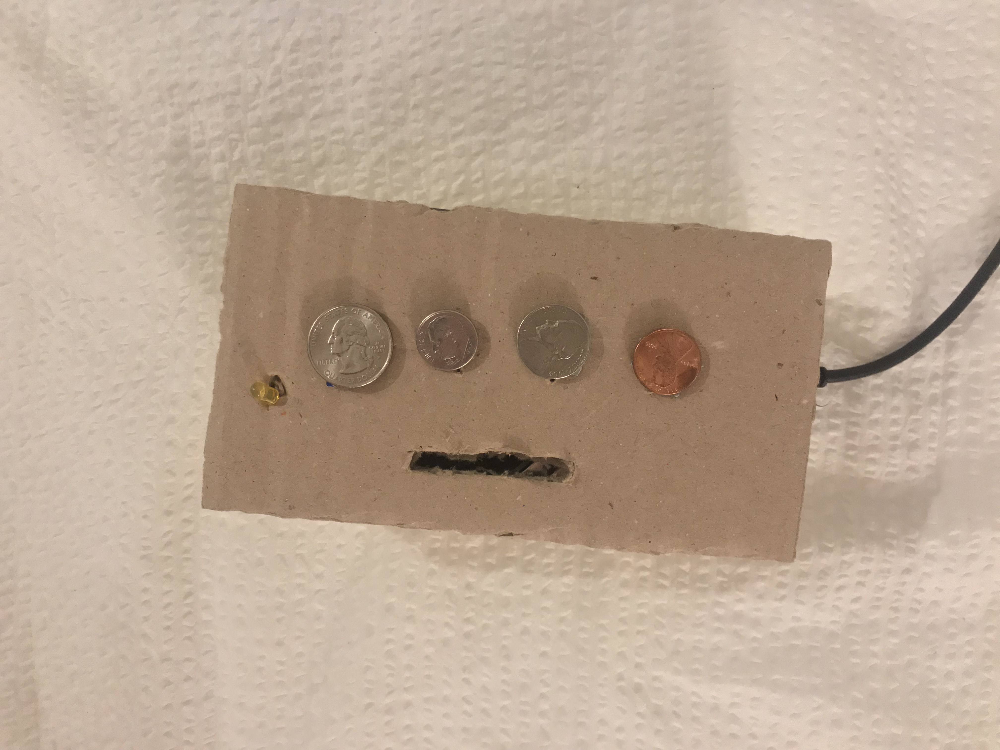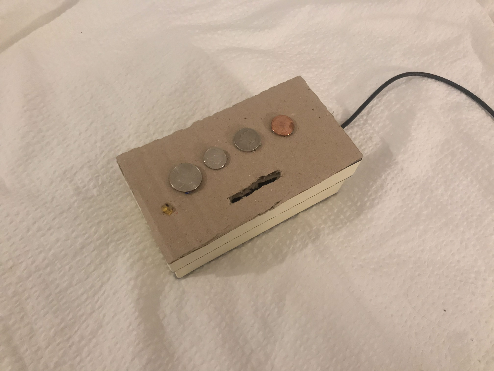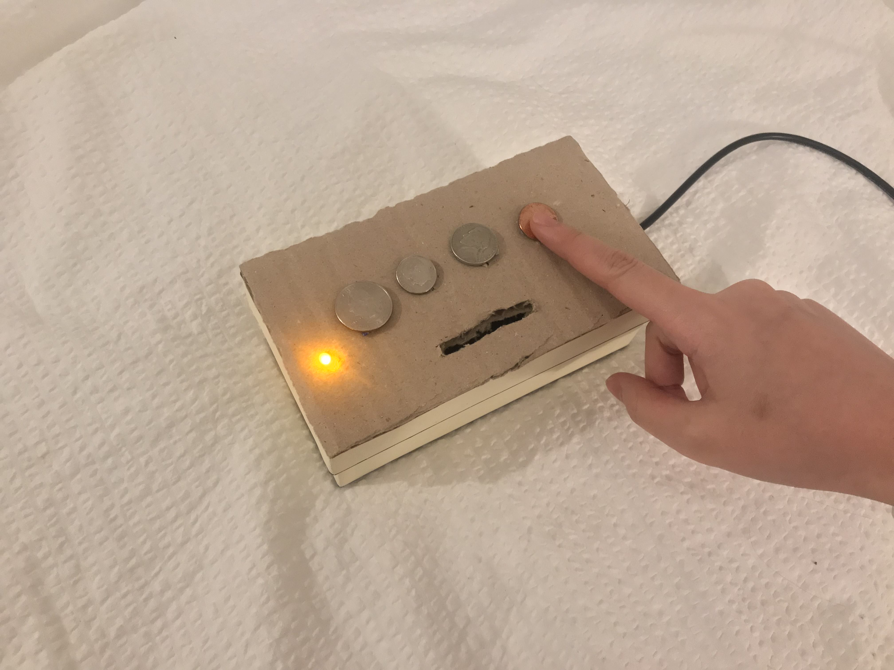
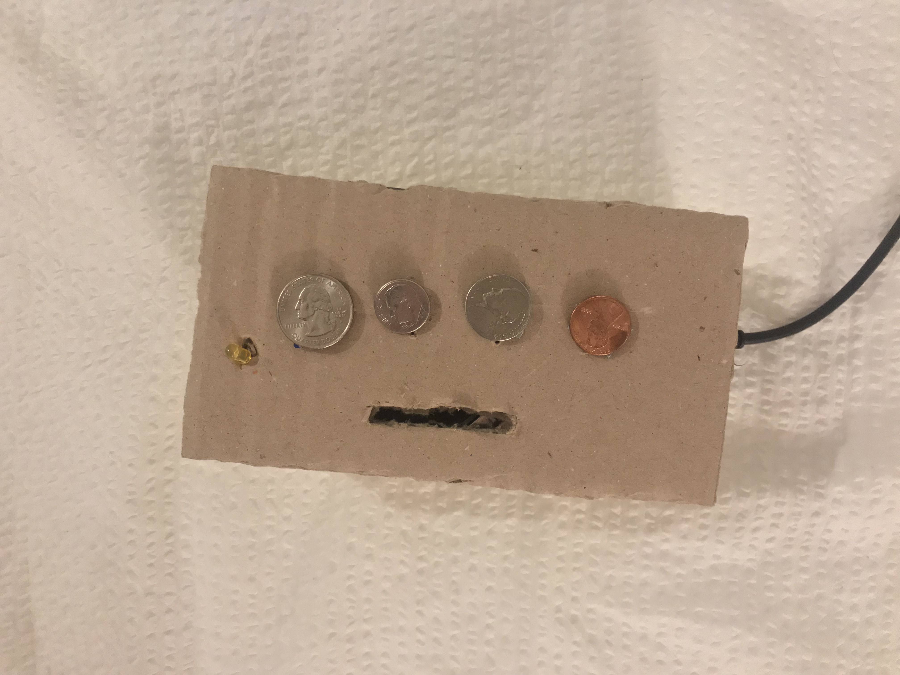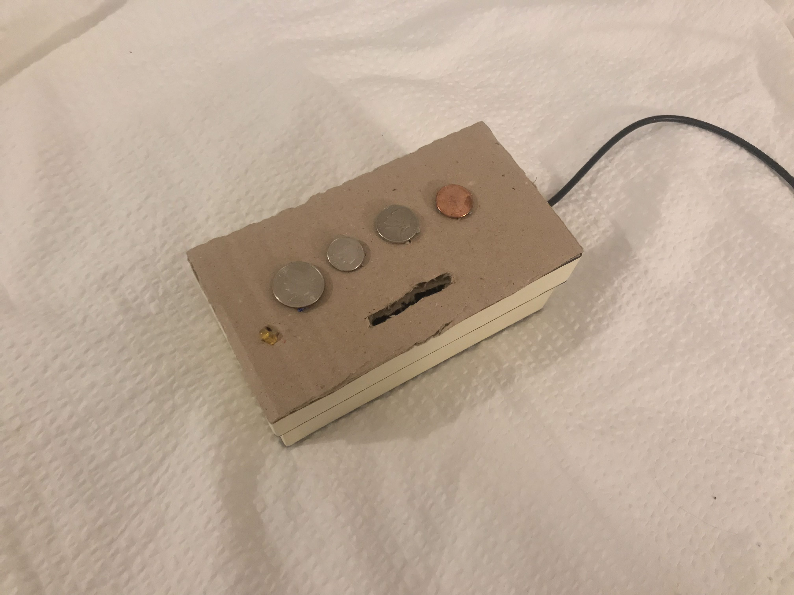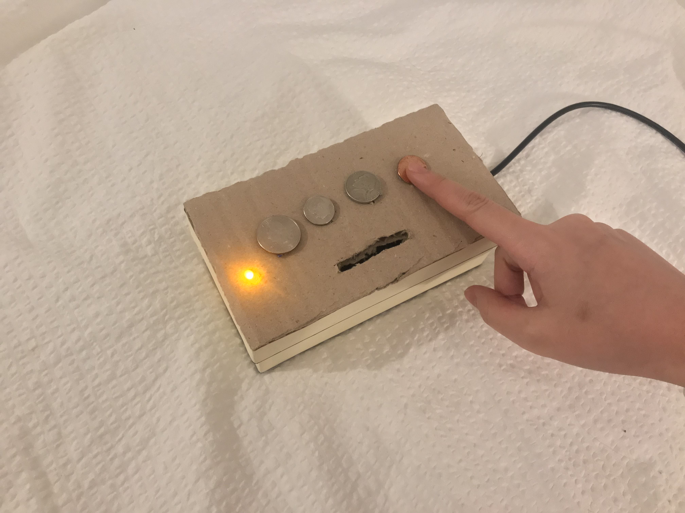The video:
Week 4 - Tone Output in a Box and Piano Wannabe
For this week's project, I combined with my fabrication box project!

And the code for this:
void setup() {
pinMode(5, OUTPUT);
Serial.begin(9600);
}
void loop() {
int potValue = analogRead(A7);
Serial.println(potValue);
int brightness = map(potValue, 0, 1023, 0, 255);
analogWrite(5, brightness);
int frequency = map(potValue, 0, 1023, 100, 4000);
tone(6, frequency);
delay(100);
}
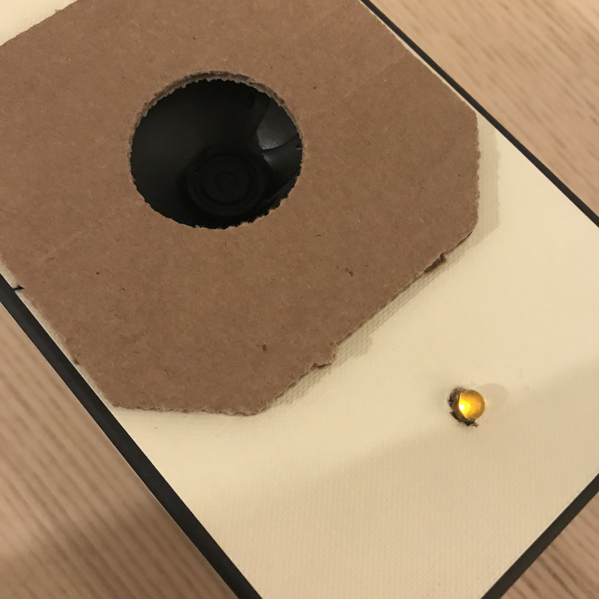 


And the code looked like this:
#define MI_PIN 4 #define RE_PIN 3 #define DO_PIN 2 #define soundPin 6 void setup() { pinMode(DO_PIN, INPUT); digitalWrite(DO_PIN, 0); pinMode(RE_PIN, INPUT); digitalWrite(RE_PIN, 0); pinMode(MI_PIN, INPUT); digitalWrite(MI_PIN, 0); Serial.begin(9600); } void loop() { Serial.println( digitalRead(DO_PIN) ); while(digitalRead(DO_PIN) ==1 ) { tone(soundPin, 262); } while(digitalRead(RE_PIN) ==1 ){ tone(soundPin, 294); } while(digitalRead(MI_PIN) ==1 ){ tone(soundPin, 330); } noTone(6); }
HOWEVER! It didn't work... The push button pins isn't even sending back 0 and 1s while another application with the same programming for the button pins works.
Week 3 - Digital and Analog Input, Servo and Observations
Digital Input
As I am playing with the LEDs, I feel anxious to see them being constantly lighted up so brightly--I want to make them dimmer--inspired me to look for a way to control the brightness level. I tried by playing with digitalWrite 0.5 and figured that this wont happen since it is still the digital signal (since there is no in between values, values under 0.5 will always be 0 and above will always be 1.) So to make it analog I watched a tutorial on generating analog signals and the solution is analogWrite! (yeah! changing the word from 'digital' to 'analog' took me so long!) But to make it loop in different brightness level, the code looks like this:#define whiteLEDPin 5 void setup() { pinMode(whiteLEDPin, OUTPUT); } void loop() { for(int value = 0; value<=255; value++){ analogWrite(whiteLEDPin, value); delay(30); } delay(50); for(int value = 255; value>=0; value--){ analogWrite(whiteLEDPin, value); delay(30); } delay(50); }
So first thing first, connect to the LED pin, always. In the loop section, I created a interger called value,
for(int value){
}
which the initial value of 'value' will be 0 (LED turned off)
for(int value = 0;){ }
and when value is smaller or equals to 255 (bits), the value increases:
for(int value = 0; value<==255; value++){
}
After that, use analogWrite to light up the LED:
for(int value = 0; value<=255; value++){ analogWrite(whiteLEDPin, value); delay(30); }
This will light up the LED with a smooth gradient in brightness, but to make it a loop back to off, we will need this:
for(int value = 255; value>=0; value--){ analogWrite(whiteLEDPin, value); delay(30); }
and now it is a smooth looping in brightness, yay!
Analog Input
The first try I had with analog input was the sensor. I saw it and always wanted to use it, but the connection wasn't challenging at all (cocky), I just connect the sensor to the board and it worked with the same code we did in class.And so my attention goes to the potentiometer instead--I want to create a LED party--being able to control more than one LED with the potentiometer. Knowing that LED has 255bits, to detect a analog signal, I will also need to set integer for the bits of a potentialmeter. But before that, define the pin of the LEDs: there are more than one LED, so set a integer that states the initial output pin as the first LED that you want to light up.In my case it is Pin 2:
void setup() { for(int i=2;){} }
Then, like the value integer from the previous application, we tell it to increase when it is smaller and equals to 7. And we have the LEDs connected:
void setup() { for(int i=2;i<=7;i++) { pinMode(i,OUTPUT);} }
Next, by knowing that the value for a potentiometer is 0-1023, we need some sort of 'translation' to make 0-1023 = 2-7. And this can be done by the map(). I set an ineger for this value:
void loop() { int pot = map(); }
Afterwards, we tell map about where to read, translate what 'low and max' value into what 'low and max' value.
void loop() { int pot = map(analogRead(A5), 0, 1023, 2, 7); }
Now, set integer i as off, and when i is increasing when it is smaller and equals to pot, i is HIGH (on). And then set the i as 'just bypassed' the LED to make a turning off loop.
void loop() { int pot = map(analogRead(A5), 0, 1023, 2, 7); for (int i=0;i<=pot;i++) { digitalWrite(i,HIGH); } for (int i=pot+1;i<=7;i++) { digitalWrite(i,LOW ); } }
So the entire code looks like this:
void setup() { for(int i=2;i<=7;i++) { pinMode(i,OUTPUT); }} void loop() { int pot = map(analogRead(A5), 0, 1023, 2, 7); for (int i=0;i<=pot;i++) { digitalWrite(i,HIGH); } for (int i=pot+1;i<=7;i++) { digitalWrite(i,LOW ); } }
And work like this:
In the cover video, I change the value of the initial LED pin to that is one before the initial LED, so that all lights can be off at the initial and when switched off.
Servo
Now, I know how to use a potentiometer, I know how to connect it to a servo! I THINK!First, I tell it the existence of my servo, name my servo as myservo, and have it setted up to pin 9:
#include
Then, like what I have did in the LED party application, translate the signals of servo and the potentiometer using the map() function. In this case, I heard that it is better to set the initial of servo as 4 and highest at 176 even though the value is 0-180, because servo kind of vibrates even when you turn the potentiometer to 0. But this value still didn't stop my servo from vibrating. However, this is how the code looks like:
#include
And here is my beautiful servo controlled by the potentiometer:
Observation - Lasercutter
Laser-cutter is the technology that I 'interacted' the most for the past week, and also the technology that I observed it 'interact' with people the most. The input will be from the computer, to the laser-cutter, just like any printer will work, the output is physical. The language you use to communicate with laser-cutter is to use Adobe Illustrator (vector files) with either a stroke of 0.001pt (for the itp one) and a power set to 85-100%, a speed of 15%-20% to cut through, or a fill with a power of 30-50% and a speed of 80-100% to engrave. This digital to physical transition seems really fascinating. However, these numbers and your vector files doesn't promise you the preciseness. The physics of how laser works and the material you use always creates uncertainties. Below are some stories happened with laser-cutter that I observed while I was suffering at the shop area:Scene: "It didn't cut through"
My classmate had been standing in front of the laser cutter for 20 mins with some acrylics in different colors that had been cut and engraved on the side, and he had been sending the same job three times already to same piece of acrylic. Finally, he can’t do it anymore on the piece that already had several same cuts that are all slightly off, he went to the shop staffs and asked for help. The power setting and everything else are all the same, the only difference is the color—which laser is basically a beam of light—will act differently when it shoots to different color or transparency.
Comment: The uncertainty always exist due to behavior of lights—when the beam hits the material, it will be reflect/bent due to PHYSICS (aka just-how-things-work-on-earth), however, this uncertainty was never really officially stated in the input system nor the on the machine itself. Also, even on the same piece in one round, the power will be different depending on how far the beam head need to travel from its initial position. So if the head need to travel to the opposite corner, it might not cut through while the one that is closer to its starting point successfully cut through. That is, a bad communication or we say, bad user experience. It is almost feels like a fraud when you submitted a perfect file and ended up with that. Next, talking about this happening mention previously, it is obvious to notice how different the machine will react when it is treating different materials, however, due to the special characteristic of light reacting to color, it is hard to calculate how you should put it the power, this without and explanation or educational support, assumed everyone being an expert in physics (at the same time fabrication and possibly design). This means, instead of parallel communication, it requires the user to be well educated to be able to interact with the technology, which is no-longer an efficient nor high interactivity. Also, another evidence of low interactivity is that the machine only considered one side of the input, which is the vector file and settings you sent from the computer, yet not the material been putted on the machine—I think this is a big drawback.
But, I still love it

Week 2 - Lumos Maxima Switch
Led Light Switch on Arduino
It is all done by Magic.
Try:
Lumos Maxima...
Lumos MaxiMa...
Lumos MAXIMA!!
Hi... So the inspiration came from the material--magnet, which I intend to get it for another class, that also conduct electricity. I wanted to make a switch that happen to looks like:
Yet, when I was trying to connect the thin wire to the magnet, I figured that, unlike the on ein the image, every material need to be nude and touching each other inorder to have the current flow. However, when magnet are touching each other, their force are too big to have the circuit open again. Facing the truth of my lack of knowledge in this field (only for now), I need to think of another way since I do not want to give up on the material.
So, instead of having the magnet as one of the connections, I used the ability of magnet as the force to close the circuit. By using a material that can be attracted to magnet and one that only conduct electricity but not attracted to magnet. I had some help with google, and I had this
After the first try, I made a new, cleaner version of the system:


And then, I want to hide the magic so I covered up everything with a film case, with a wand that has hidden magnets at the tip of it:

Week 1 - art-of-interactive-design and the future of it
The Art of Interactive Design: A Euphonious and Illuminating Guide to Building Successful Software
Chris gives his definition of interactivity, that is interactivity involves the an alternately process of listening, thinking and speaking of two actors. It’s very interesting how he deny the ‘activities’ (such as reading, dancing, watching movies and etc.) that people tend to mention as interactivity to be interactivity. Also, as an interaction (not interactivity) designer, how he differentiate Human-Factor Design, UI design and Interactivity Design really gives me an idea but I feel I still need to read more on this to learn his idea more solidly.After reading the first chapter made me tend to rethink about the immersive shows: Sleep No More and Then She Fell.
Whereas people mention them as the ineractive shows. Whether they are truly interactive or they are just an audience-participative show. My experience at Sleep No More is definitely a participation, never a interaction. Where you get to step into the performing area (since the entire building is their stage) and have little touches with the performers. Some lucky audience might be selected for 1 on 1 performances, but rather than “two actors alternatively listen, think and speak”, it’s more likely the performer do the speaking (only to you, with set lines), and the audience react. But my experience in Then She Fell could be in the degree of interactivity, a low to medium interactivity happened. The scale of the audience is way smaller than the one mentioned previously, that might also be what he mentioned in the first chapter “as audience size shrinks, the statistical factors become less adamant.” For every show there will only be 15 audience, with the similar (or maybe more) amount of performer. Most of the scenes I experienced in this show are 1 on 1 or two audiences with four of the performers. The most memorable part in the entire show, also, the part I considered as a medium interaction happening, is when I’m having a 1 on 1 scene with the heroine and we had a conversation about relationship. Her opening question might be a set line, but whatever comes after that involved both of our listening, thinking and speaking. Yet, I call it a low-to-medium interactivity is because we were strangers and it is hard to give good feedback for such personal topics, so it was not an useless (cliche) conversation (but it was still fun as it appeared in the show).
In the next chapter he mentioned the relationship of computer and interactivity, which he suggested that the main "selling point" of a computer is its interactivity, by giving the example of ViSiCalc--the very first spreadsheet software on personal computers that allows the user to see the result/output directly on screen. This high efficiency indicates a sucessful, productive interactivity that a computer can provide. Thus, interactivity surely is the competitive advantage for computers.
A Brief Rant on the Future of Interaction Design
Victor talked about how our activity had been limited down to Pictures Under Glass. He start by defining a good tool is designed to fit both sides (capability vs. need). Talking about human capability, the thing that we use to interact with future technologies will be our hands. Our hands receive feedbacks from almost everything in this world—we notice when we grabbed two pages at once when we are reading and trying to slip apart by rubbing them; we feel the change in weight of a glass of water when it’s getting lesser and lesser; we feel the different texture of tissue papers and select each for different usages. However, our technology devices nowadays, which we spend most of our tactile experience with, are all so-called the Pictures Under Glass. Victor deny the saying of touchscreen devices to be the future of interaction, instead, sort of a backward in interaction (I felt it actually sounded too esthetically when he mentioned black and white in photography. I like film and black and white <3 ).Now, almost every services had been shrinken down to the size of the “glass brick” we carry in hand. The “User-Friendly” we mentioned nowadays are also only up to the extend of how hands handle this glass, but not about our hands. After reading this, I really feel even though these digital products provide us conveniency to almost every service just by clicking on this glass, but it limits the potential interaction that our hand can have to things in the world. Also, this concept of smart device generation limits our capability as a designer. We thought that accessibility lives in that tiny glass brick, and ignored the subject that we are doing this for—us.